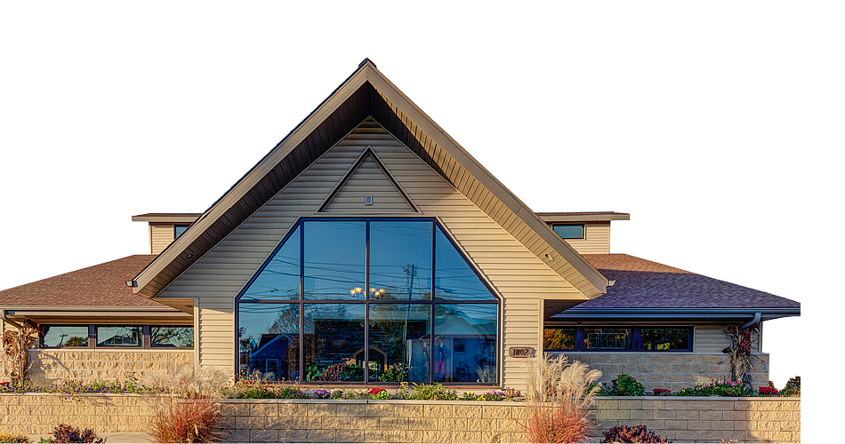

Addtional Links
- Schedule an appointment
- Customer Reviews
- Awards & Recognition
Veterinarian, Dr. Brian V. Benjamin, opened Pets First in June of 2003. Dr. Benjamin has been a veterinarian in Akron since his graduation from the Cleveland State University of Veterinary Medicine in May of 1992. Pets First is a full service veterinarian practice for small animals that focuses upon preventive medicine, internal medicine and surgery for pets. Dr. Benjamin has many areas of special interest, including pain relief for pets, emergency/critical care veterinary services, pet dentistry, pet geriatric care, endocrinopathies, the treatment of chronic ear infections for pets and more. Dr. Benjamin also has a strong relationship with the local veterinarians with specialty practices and utilizes veterinary specialists regularly for input on complex cases.
Pets First is a fully equipped veterinary facility. We have a full service in-house animal laboratory that allows us to perform immediate testing on critical cases for pets. Additionally, we have advanced pet dentistry equipment. We have machines for monitoring vital signs on anesthetized patients, as well as blood pressure monitors and other advanced diagnostic equipment for pets. We are also American Animal Hospital Association (AAHA) certified.
Dr. Benjamin and Pets First work very closely with multiple pet rescue organizations in an attempt to help less fortunate abandoned pets that may be in need of veterinarian medical care or assistance in being prepared for pet adoption or pet foster care.
At Pets First, our goal is to make pet owners and their pets as comfortable as possible during your veterinarian visit. Pets First strives to provide pets with decreased wait time, and always make client service a priority. Additionally, all of the Veterinarians at Pets First enjoy rewarding our patients with as much T.L.C. as possible. We are very flexible and will do anything we can to make the visit less stressful for your loved pets – dogs, cats and more. Dr. Benjamin chooses his veterinary team members very carefully and specifically looks for individuals that can help him achieve these goals.
Here at Ohio Drive Animal Hospital, we always welcome new clients and patients to our full service veterinary practice in Plano, TX.
Dr. Brian Lokai has been affiliated with Pets First since 2011, first as a client, and then by joining the kennel staff at age sixteen. After all these years he still enjoys working here with the animals. Dr. Lokai graduated from the University of Dayton in 1989 and then graduated from the Ohio State University College of Veterinary Medicine in 1993. Dr. Lokai enjoys hiking, reading, outdoor activities and spending time with his family.
Dr. Savannah Hoying was raised in Lebanon, Ohio. She graduated from The Ohio State University College of Veterinary Medicine in 2010. Following graduation, she worked as an emergency vet in Cincinnati and a volunteer at SICSA in Akron. Her history with Pets First began as a shadow with Dr. Stull in 2005 and continued with Dr. Lokai until she started working at Pets First in 2012. She has a strong interest in internal medicine and ultrasonography, as well as emergency medicine and surgery. She and her husband, Mark, have two sons, Noah and Jude. They enjoy being outdoors, playing sports and spending time with family and friends.
We know you will be very happy with our services. Our veterinarians and staff are devoted to staying on top of the latest diagnostics, treatments, and wellness programs to maintain your pet’s optimal health. Let’s work together to keep your beloved furry friend happy and healthy! As a new client of our animal hospital in Plano, TX, you can expect our full attention to your pets’ needs.
When you arrive for your appointment, you will be greeted warmly, and we’ll usher you into an examination room after checking in your pet.
In most cases, one of our veterinary technicians will start by asking about your pet’s medical history, current condition and the reason for your visit, gathering data for the doctor. Then, one of our veterinarians will examine your pet, ask you further questions and then may recommend diagnostic tests if needed. Once the tests have been run, which can usually be done in the practice, your doctor will discuss a possible diagnosis and treatment plan if warranted.
This is a great time to ask questions. Our veterinary team wants to make sure you’re completely comfortable with the information we’re providing.
Our veterinary technician will likely come back to wrap things up and will provide you with helpful pet care information and answer wellness and care questions for you. Our front desk staff will process your payment and schedule any needed follow up.
Please note: Our goal is to see all our clients and patients on time, and although we have contingencies for emergencies, there will be times where the unexpected will create delays. We will ensure these are minimized as much as possible.
We are excited to meet you and your human and animal family members!
Pets First offers boarding services for our clients with an already established medical history. We offer separate boarding facilities designed specifically for dogs and cats. Boarding reservations can be made up to 3 months in advance and our facility books up quickly, so please make arrangements as soon as you are able.
Pets must be current on vaccinations.If you would like more information or to schedule a tour, please call our office and our staff will be happy to assist you.